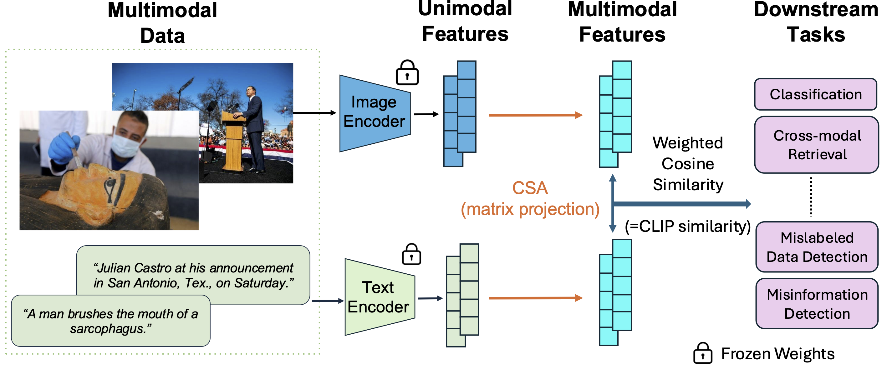

CSA: Data-Efficient Mapping of Unimodal Features to Multimodal Features
Po-han Li, Sandeep Chinchali, Ufuk Topcu
The University of Texas at Austin
Abstract
Multimodal encoders like CLIP excel in tasks such as zero-shot image classification and cross-modal retrieval. However, they require excessive training data. We propose canonical similarity analysis (CSA), which uses two unimodal encoders to replicate multimodal encoders using limited data. CSA maps unimodal features into a multimodal space, using a new similarity score to retain only the multimodal information. CSA only involves the inference of unimodal encoders and a cubic-complexity matrix decomposition, eliminating the need for extensive GPU-based model training. Experiments show that CSA outperforms CLIP while requiring 50,000 times fewer multimodal data pairs to bridge the modalities given pre-trained unimodal encoders on ImageNet classification and misinformative news caption detection. CSA surpasses the state-of-the-art method to map unimodal features to multimodal features. We also demonstrate the ability of CSA with modalities beyond image and text, paving the way for future modality pairs with limited paired multimodal data but abundant unpaired unimodal data, such as lidar and text.
CSA Framework
The CSA framework consists of two main components: unimodal encoders and a similarity analysis module. The unimodal encoders independently process different modalities, such as images and text, to extract feature representations. These features are then mapped into a shared multimodal space using the similarity analysis module (canonical similarity analysis). It then employs a similarity score, just like how CLIP does, retain only the relevant multimodal information among the modalities.

Pipeline

Experiments
CSA surpasses CLIP in efficiency, using pre-trained unimodal encoders to map features with remarkable data efficiency.

BibTeX
@inproceedings{
li2025csa,
title={{CSA}: Data-efficient Mapping of Unimodal Features to Multimodal Features},
author={Po-han Li and Sandeep P. Chinchali and Ufuk Topcu},
booktitle={The Thirteenth International Conference on Learning Representations},
year={2025},
url={https://openreview.net/forum?id=6Mg7pjG7Sw}
}